清迈, 刷我滴卡
王福强 - fujohnwang AT gmail DOTA com
扶墙老师作为典型的土鳖， 这次终于出了趟国， 且许久没有写游记，遂记下几笔，以表纪念…
作为一个晕机，晕车，晕船的死宅， 出去溜达甚是不易啊~
静悄悄的车喇叭
初到清迈， 最直接的感受就是，没有了哇啦哇啦的车喇叭声，开始以为是错觉，观察了几天之后，并且跟同行的财宝们碰了下，发现这是真的，真的几乎没有喇叭声， 偶尔几个也是多年来车看你玩手机，轻按一下提醒你。
开始以为，难道是泰国人民信教，有信仰，素质高？还是法律有约束？ 甚至还有哥们儿说， “会不会是喇叭都拆了？”， 所以，最后一天包车去射击场的时候， 看司机健谈，就中英文夹杂着就这个问题进行了探讨， 他给我的回复大意是， 在清迈， 大家都是慢节奏的生活，没有必要（按喇叭），谦让一下就都过去了， 而且，他们知道中国人如果听到喇叭会angry， 所以，也会注意这个问题， 当然最根本的，还是慢节奏。 他还说， 如果换做是在曼谷（Bangkok）， 那就基本上是另一番景象了， 每个人都急匆匆的，分分秒秒为了挣钱， 稍有矛盾还会直接开干。 好吧， 看来曼谷跟国内是一个风格的， 环境对人的影响太重要了， 人是环境的孩子， 回国后听到车喇叭哥就又开始烦躁了…
车
当同行的败家娘们儿们， 哦不， 同行的女财宝儿们一路准备血拼的时候， 扶墙老师其实已经打下谱儿好好拍车了，哈哈
第一天中午去吃早餐， 碰到一辆老甲壳虫， @珍珠同学就很好奇的问，这啥车？为啥国内没有？我只能说，国内之前要求强制报废，而且不能改装，所以，很多这种老爷车，经典车在国内就没有存活空间了，不过这车没来得及拍下来， 用植物园拍的老爷车表表意思吧 ;)
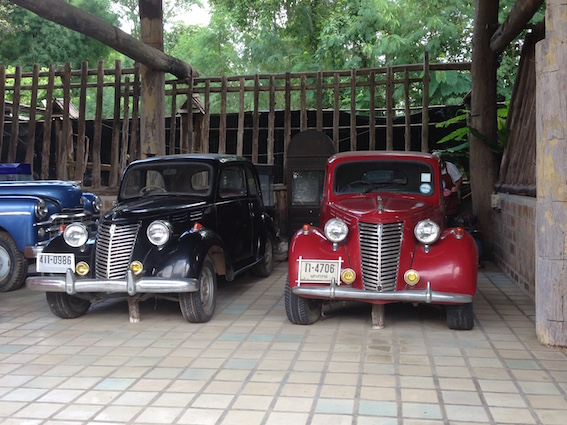 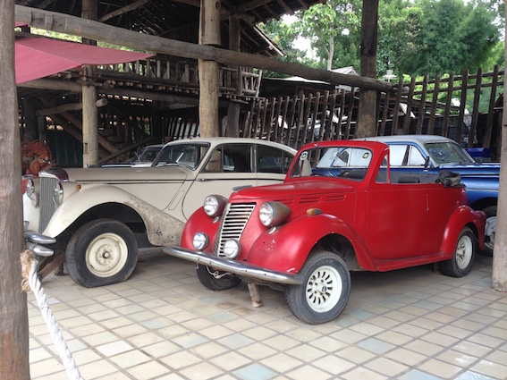 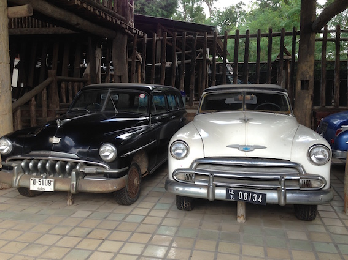
吃完中午的早点出门不远，就发现了哥一直钟意的Suzuki Samurai， 也就是老款的吉姆尼，Off-Road经典车型~：
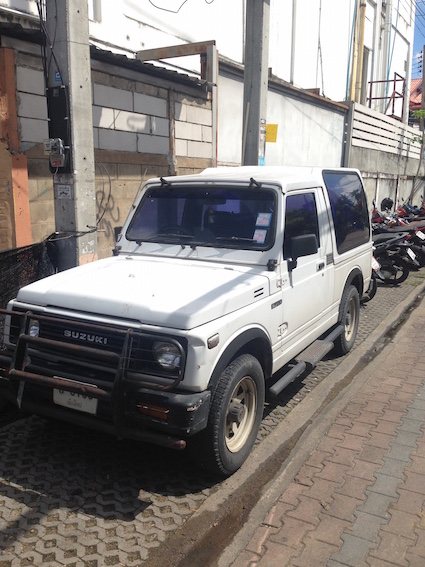
在清迈， 扶墙老师大体上凭感觉将这里的车划分了一下， 轿车比较少，姑且不论（哥其实也不感兴趣，哈哈）
商务车
以下面这辆为最典型（只是第一天晚上到了酒店后拍的一张，凑合看吧）：
也发现了一辆底盘贼低的：
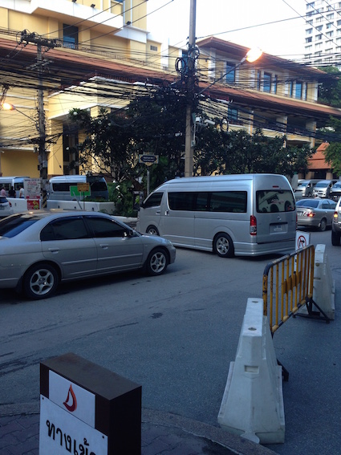
皮卡(pickup)
清迈的皮卡是真多，且日本品牌占绝对地位， 从丰田，本田，到尼桑，马自达，一个都不少，哦，对了，还有五十铃（ISUZU），看到极少量雪佛兰的皮卡， 甚至去大象营的路上看到一辆拖车，上面是一辆皮卡， 扶墙老师刻意瞅了眼， 雪佛兰的，哈哈， 这算不算是黑美国品牌？
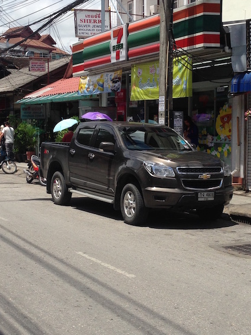
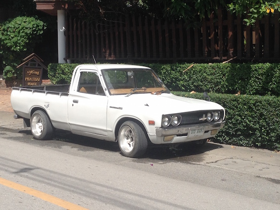
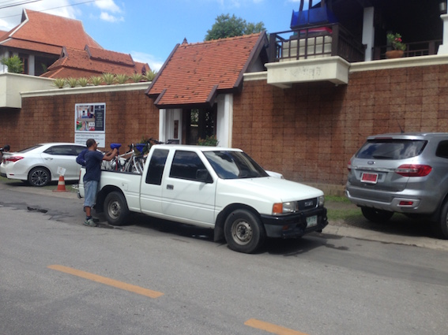
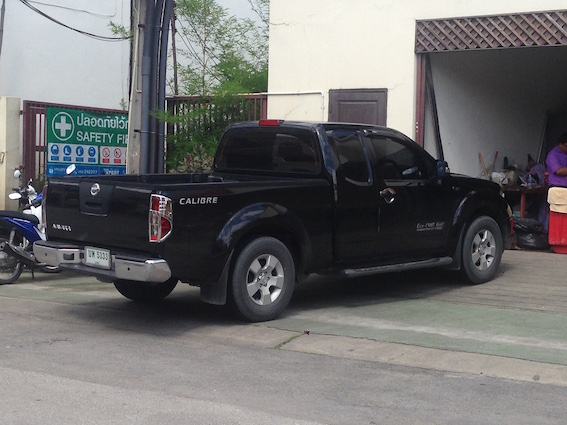
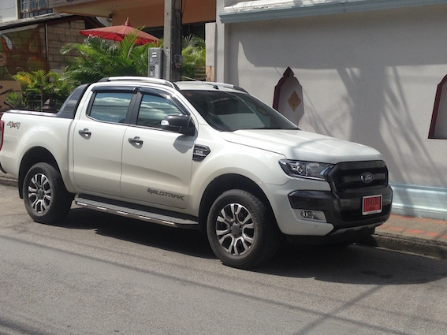
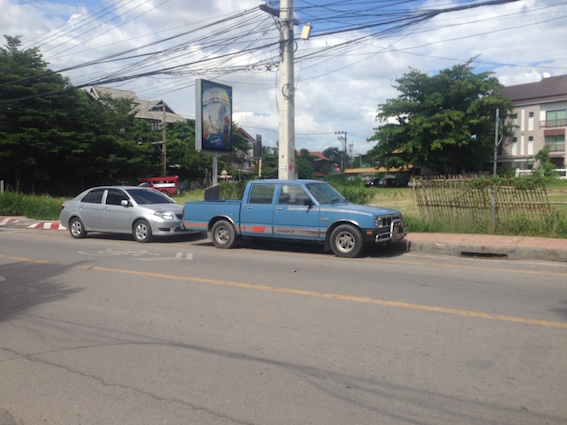
为啥清迈皮卡这么多那？ 按照包车的司机跟我讲，这边很多人从事种植业，贩卖水果之类， 使用皮卡真的是很方便， 国内年检加上交通管制之类， 用皮卡可能就没那么爽了，所以，如果有offroad或者拉货需求，就得转而SUV了吧？
可是皮卡是真爽啊， 丛林飞跃的时候， 小皮卡爬至少30度的坡儿， 轻松加easy~
说到SUV，我就不单列了，简单贴几张抓拍的SUV吧：
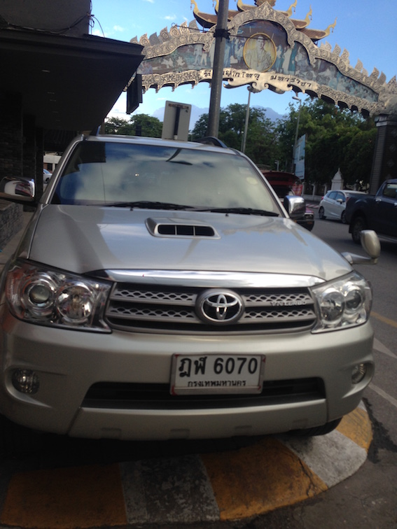
最后这张跟我们“高行长”的有点儿像，不过，应该不是长城吧，哈哈
三轮摩托车
不用100w去买长江750， 也不用买乌拉尔厂的，更不用考虑日本或者德国的， 泰国人民自己打造，成本低廉， 用途广泛，拉货摆摊两不误，哈哈
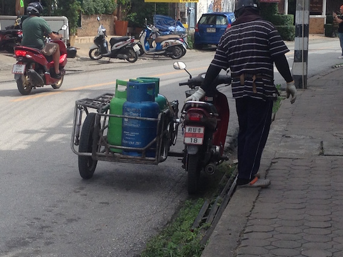
摩托车和自行车在清迈也很多，而且游客可以租了自己去玩，不过， 交警会偶尔找找麻烦，没驾照， 交罚款吧，哈哈， @齐刀老板被罚了500 baht，后面有“狡猾”的，只说没钱，也给放行了…
双条车
其实就是五十铃后面加两排座位并盖个盖子，为啥叫双条车，我估计就是那两排后加的座位吧！
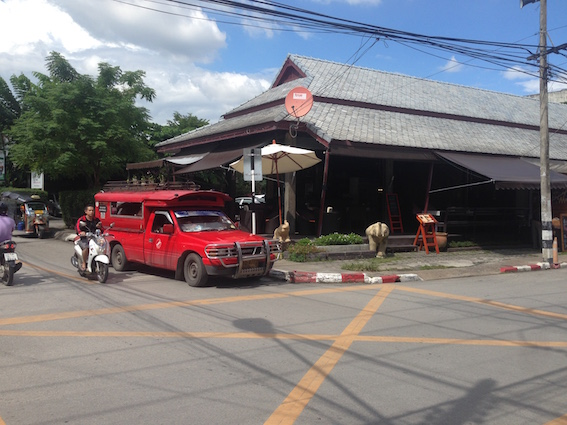
双条应该是清迈的bus+taxi的合体吧， 如果空车，应该是可以去任何你想去的地方吧，如果有人，可能就只能顺路才拉了，扶墙老师不确定啦， 因为没坐过，哈哈
大象的国度
不单单一个清迈，应该是整个泰国都是大象文化， 从T-Shirt, 到雕刻，日常用品， 佛教人物， 处处体现出了大象的存在，所以， 我觉得叫泰国为大象的国度应该太恰当不过了。
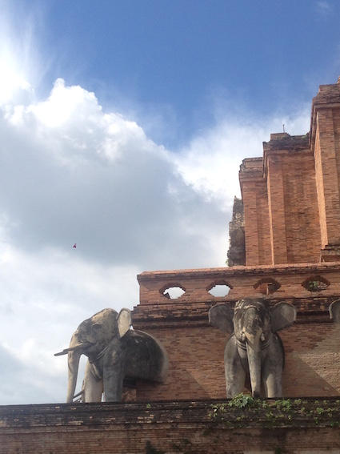
当然，对扶墙老师来说， 感触最深的也是大象给的， 在美莎大象营的大象表演中， 扶墙老师完整了见证了一只大象如何从无到有的完成了一副很有意境的风景画，对于像我这种一直崇尚艺术却觉得很难，没有这方面天分的人来说， 着实受教良多，所以， 扶墙老师溢价拍下了这副大象的作品，以警醒自己。
其实，这份感受不在现场可能不会很深，不过， 扶墙老师还是把过程的点滴放在这里吧，或许各位看官可以有些许感受：
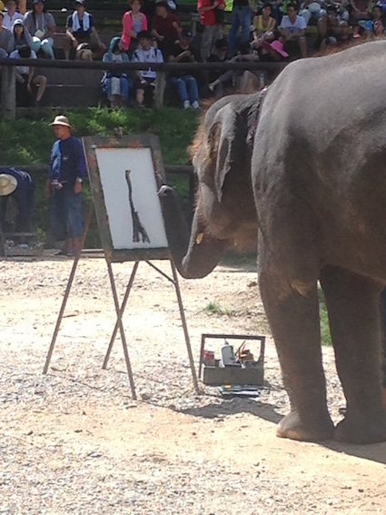
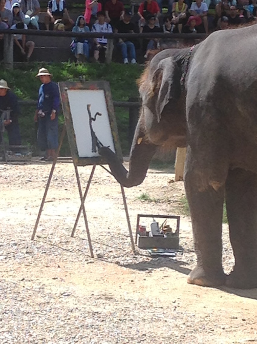
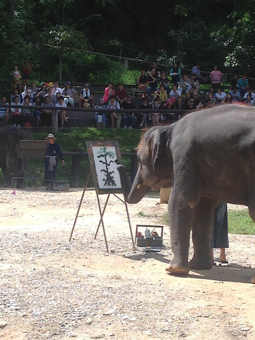
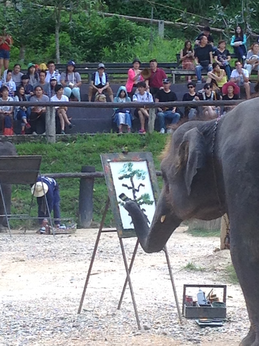
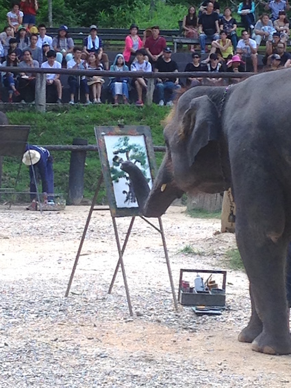
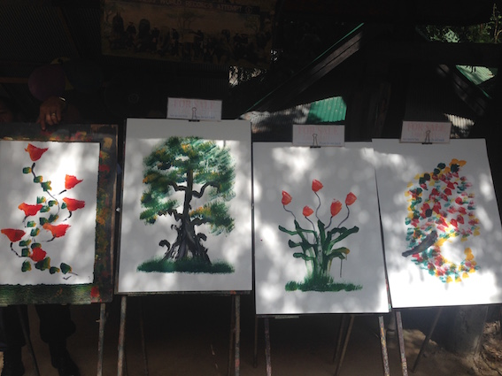
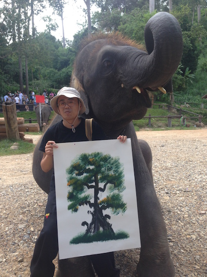
要感受大象的国度的魅力，各位看官还是找机会自己去感受吧！
FX
在清迈溜达，你会发现很多外汇兑换点， 作为一个旅游城市（貌似一半是游客，这一半游客里一半又是中国人，哈哈）， 拥有外汇兑换服务没啥惊奇的，只不过，扶墙老师的关注点是， 在这里， 貌似外汇交易官方和民营是并存的，而在我大中华区，嘿嘿
Real-estates
房地产在我大中华区如此火爆， 出去溜达的时候， 自然也会关注啦，看我们@齐刀老板，这玩的时候都要去了解别野，哈哈， 200多方只要60多万软妹币， 太tnd划算了。
不过， 外国人只能拥有房屋的产权和使用权， 但不能获得土地的所有权（其实对我大中华区人民来说无所谓啦，本来就是这样的）， 而本地人拥有土地的所有权并可以继承，只要不卖， 土地所有权是永久的（只要没动乱 ;))。
如果你想获得土地的所有权， 可以与本地人成立一家公司，但本地人要占多数，这家公司可以作为商业实体购买土地并获得土地的所有权。
泰拳(Thai Boxing)
作为一名武术爱好者， 去泰国当然要欣赏一下拥有泰国特色的泰拳表演啦~
我们一行7人购买了VIP席位，一共看了7场泰拳比赛， 从小青年儿，到小孩子， 到年轻的女拳手，再到三位大叔蒙眼盲打，最后以青年拳手中一名膝盖受伤短促的结束了最终的对垒。
应该说，看得没那么嗨， 因为这个俱乐部的擂台上表演的成分会多一些，尤其第一场，基本就是假打。
其实， 扶墙老师看泰拳表演有些百感交集的，一方面可能会觉得这些拳手从小可能因为生存而使用这种最原始的方式挣生活不易， 另一方面， 他们战前的战舞又多少体现了他们的某种骄傲，不管怎么样，这是一种生活方式， 但台上和台下注定将是不一样的人生…
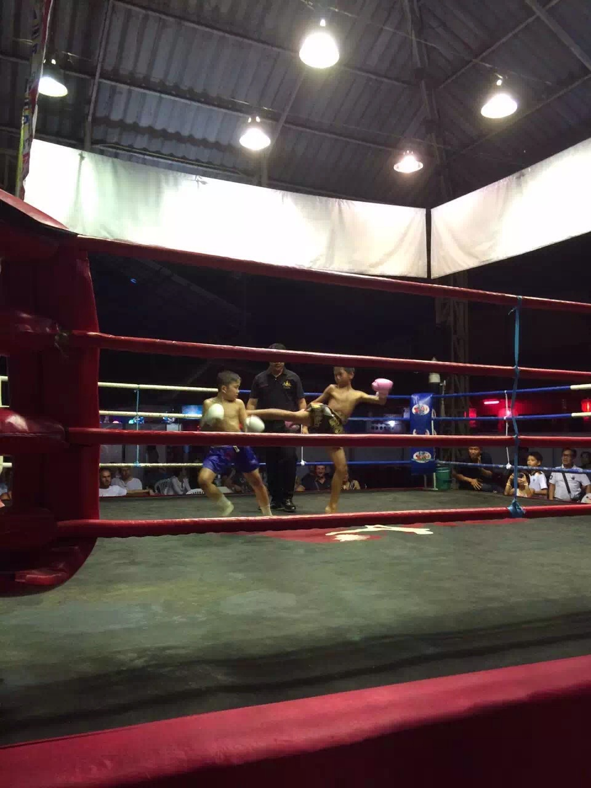
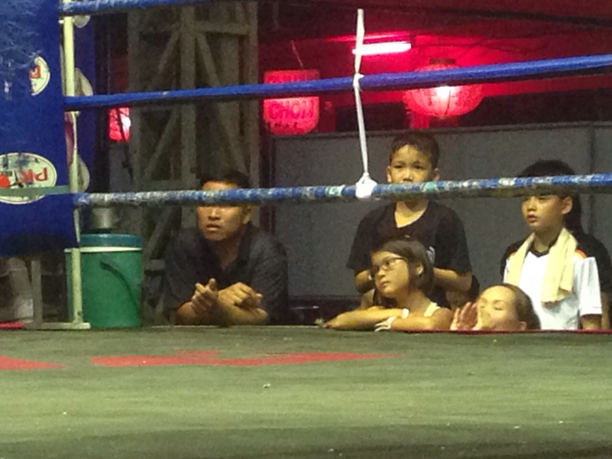
玩儿枪(Shooting Club)
1999年， 扶墙老师上大学了，可是， 为了国庆， 大中华区入学经典项目-军训也禁止射击训练了，艹， 为了弥补哥心中的忧伤， 不管花多少软妹币， 也不管时间有多紧， 扶墙老师在要离开清迈的当天上午，包了辆车， 直冲射击俱乐部，只为了能够把玩一下各类枪械…
30发子弹/1700 baht, 不管什么枪，所以，哥选择了glock， @珍珠同学选了左轮， 然后还不尽兴，但泰铢现钞不够，就又划卡要了小口径步枪（应该是ruger很老的枪型），md， glock声音好大， 而且卡壳，没有事先预想的那么好操控， 所以剩下大部分子弹给@珍珠同学泄火了，免得她回去谋杀她家亲夫， 左轮和步枪还是比较好操控的。
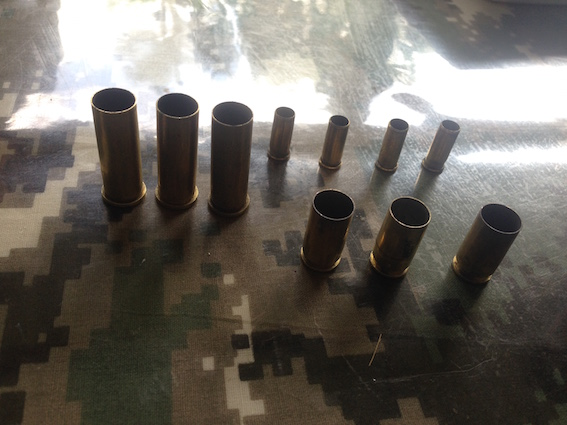
这回还是没玩爽， 枪太老， 品种也不多， 下回老子要去米国玩AK， M4，哈哈， 还有1911
Massage
清迈的Massage行业很繁盛， 第二天逛完累的要死， 去做了一下Thai Massage，按的还是很不错的， 最后第二天因为逛完周末夜市很晚回来， 东西放回酒店之后，出来找massage的地方， 酒店左转这条街某位同学说是红灯姐，所以， 走了很长距离，发现都是昏暗的红色调， 巷子里还有老外跟本地不知道是Girl还是Lady Boy在那儿搂搂抱抱的，我就只能折回来找了家露天的帮忙做做foot massage了。
总之， Massage应该是高中低档都有，高档的费用跟国内差不多，中低档就比较亲民了。
Thai Food
在清迈应该不会为了吃发愁吧， 各位女财宝们什么mango tango这种小资必去之地肯定不会放过的啦， 总体上来说， 在清迈，水果新鲜， 咖喱和海鲜基本什么店里都不缺吧， 不过我其实只怀念warorot市场的热乎乎的香肠， 虽然油腻些，可是辣的好爽，哈哈
最后，附上扶墙老师在清迈买的最便宜的，却是最钟意的布书签， oh yeah， 只要10泰铢哦~ ^_^
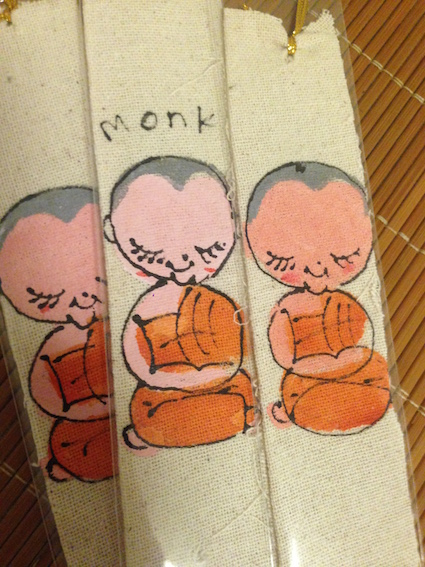


开天窗，拉认知，订阅「福报」，即刻拥有自己的全模态人工智能。